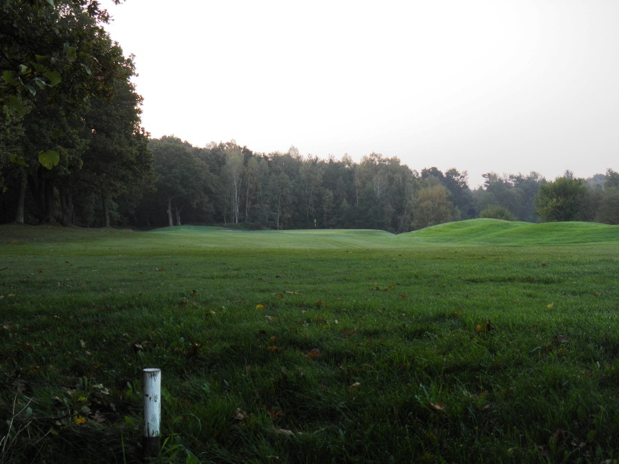

<div class="pages">
  <div data-page="hul16" class="page navbar-fixed toolbar-fixed" >
    <div class="navbar">
      <div class="navbar-inner">
        <div class="left">
          <a href="#" class="link back icon-only"><i class="icon icon-back"></i></a>
          <!-- <a href="#" class="back link icon-only"><i class="icon icon-back"></i></a> -->
        </div>
        <div class="center">Hul 16</div>
        <!-- <div class="right"></div> -->
        <div class="right">
        </div>
      </div>
    </div>
    <div class="page-content" style="padding-top:45px;">
       <div class="content-block">
          <center></center>
          <p>16. hul er banens korteste par 4 hul og uden tvivl et af de smukkeste.</p>
          <center></center>
          <p>Flaget på green kan ses fra tee-stedet bag en række græsbeklædte buler i højre side af fairway. Gurre å i venstre side er out of bounds og fairway bunkeren i dog-legget fanger mange udslag. Til højre for bunker og buler truer en parallel vandhazard, buske og lang rough.</p>
          <p>Indspillet til den store, næsten vandrette green trues af buskads og en bunker til venstre, skrånende terræn mod søen til højre og en stor bunker nedenfor skråningen bag green. Green bør læses grundigt inden du putter, da den ikke er vandret!</p>
          <p>For lav-handicapperen bør det naturligvis overvejes kraftigt at gå efter green i drivet. Den er afgjort indenfor rækkevidde og der er ingen forhindringer før green. Det kunne jo være fristende med en eagle her på tredjesidste hul!</p>
          <p>Hulsponsor: <br />
          <br /><br />
          Bænksponsor:<br />
          
          </p>
        </div>
    </div>
    </div>
    </div>
  </div>
</div>
